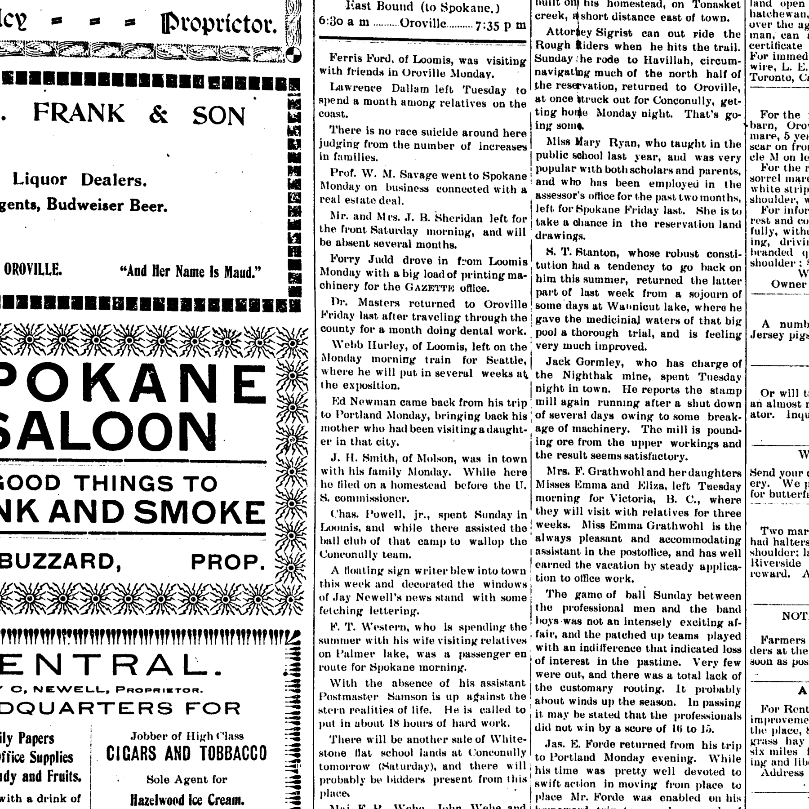

Harriet M Brate 1847–1924
Peter's great-great-grandmother by adoption.
Harriet M Brate was born on 26 Sep 1847 in Albany, United States1, the daughter of Brate and Doken9. She married Edward Newman in 1870 (according to an online family tree)10. She died on 29 Apr 1924 in Okanogan, Washington, United States (according to an online family tree)2 and was buried at Tonasket Cemetery, Washington, United States (according to an online family tree)2.
Family
- Parents
- Brate and Doken tradition
- Husband
- Edward Newman 1844–1909 · married in 1870
- Children
- Carrie May Newman 1878–1970 tradition
Life events
| Event | Date | Place and details |
|---|---|---|
| Born | 26 Sep 1847 | Albany, United States Preferred version: Her 1924 Washington death certificate (N3GL-VV8, giving 26 September 1847 in Albany, New York) and her Tonasket Cemetery gravestone (Find a Grave QVKJ-HGH7, giving 26 September 1847) agree on 26 September 1847; the FamilySearch tree's 22 November 1848 is unsourced.1 |
| Born | 22 Nov 1848 | Albany, United States According to an online family tree2 |
| Lived | bet Jul 1874 and 3 Jul 1875 | Yates, United States3 |
| Lived | 24 May 1878 | Oak Orchard, United States According to an online family tree4 |
| Lived | 1880 | Ash Rock, United States According to an online family tree2 |
| Lived | bet 1882 and Aug 1892 | Gilliam County, Oregon, United States5 |
| Lived | Mar 1882 | California, United States6 |
| Lived | 1900 | Toroda Creek, Washington, United States According to an online family tree2 |
| Lived | 24 Jul 1909 | Conconully, Washington, United States7 |
| Lived | 2 Aug 1909 | Washington, United States8 |
| Lived | 1910 | Milwaukie, Clackamas County, Oregon, United States According to an online family tree2 |
| Buried | 1924 | Tonasket Cemetery, Washington, United States According to an online family tree2 |
| Died | 29 Apr 1924 | Okanogan, Washington, United States According to an online family tree2 |
Records

Sources
- Death certificate and gravestone of Harriet (Brate) Newman, Tonasket, Okanogan, Washington.
Harritt Newman: Birth 26 Sep 1847 @ Albany, Ny, Usa; Death 29 Apr 1924 @ Tonasket, Okanogan, Washington
Her 1924 Washington death certificate and Tonasket Cemetery gravestone record her birth as 26 September 1847 in Albany, New York (whereas FamilySearch tree L6VS-97W gives 22 November 1848).
- FamilySearch Family Tree: Harriet M Brate (L6VS-97W).
- NUMIDENT and 1945 Washington death record of Edward Newman Jr..
Edward Junior Newman: Birth 3 Jul 1875 @ Lindenville, New York, United States; Father: Edw Newman; Mother: Harriett Brate
Lived in Lyndonville ('Lindenville', Town of Yates), Orleans County, New York with her husband Edward Newman when their eldest son Edward Newman Jr. was born there on 3 July 1875 (or July 1874 per the 1900 census).
- FamilySearch Family Tree: Carrie May Newman (KGWM-KQ2).
Carrie May Newman (KGWM-KQ2): Birth 24 May 1878 @ Oak Orchard, Ridgeway, Orleans, New York, United States
Lived in Oak Orchard, Town of Ridgeway, Orleans County, New York when her daughter Carrie May Newman was born there on 24 May 1878.
- NUMIDENT and 1949 Washington death record of Grover Cleveland Newman, 1901 BC marriage of Lilly E. Newman, and 1892 elopement from Fossil.
Grover Cleveland Newman: Birth 28 Apr 1887 @ Fossil Wheel*, Oregon, United States; ParentChild: Edward Newman, Hattie M Brate … Lilly E Newman (JD8G-HXW): Birth 1882 @ Fossil, Oregon … Winter Scott Alderson (L51K-5YQ): Eloped 16 August 1892 @ Fossil, Gilliam, Oregon, United States
Lived in Fossil, Gilliam County, Oregon, where her children Lilly E. Newman (born 1882 in Fossil per JD8G-HXW; Jan 1884 in Oregon per MMPL-98T) and Grover Cleveland Newman (born 28 April 1887 in Fossil per NUMIDENT 6KW1-MWL6; 28 April 1886 in Fossil per 1949 WA death record HV8L-SSN2) were born and from where her daughter Carrie May Newman eloped on 16 August 1892 (per FamilySearch tree L51K-5YQ).
- Household of Edward Newman, Toroda Creek, Okanogan, Washington.
William Newman: Birth Mar 1882 @ California; Census 1900 @ Toroda Creek, Okanogan, Washington, United States; RelationshipToHead=Son; Age=18y
Moved west with her husband Edward Newman via California, where their son William Newman was born in March 1882 according to the 1900 US census.
- Death certificate of Edward Newman, 24 Jul 1909, Conconully, Okanogan, Washington.
Edward Newman: Death 24 Jul 1909 @ Conconully, Okanogan, Washington; Birth 1844; Age=65
Inferred to have resided in Conconully, Okanogan County, Washington (where both lived in 1900 per MMPL-98T) when her husband Edward Newman died there on 24 July 1909 (N32X-861), before moving to her daughter Carrie May Alderson's household in Milwaukie, Oregon by April 1910.
- Local News, Oroville Weekly Gazette (Oroville, Washington), 6 August 1909, p. 4.
l id Newman came hack from his trip to Portland Monday, bringing hack his mother who had been visitingadaughter in that city.
Translation: Ed Newman came back from his trip to Portland Monday, bringing back his mother who had been visiting a daughter in that city.
Returned to Oroville, Okanogan County, Washington on Monday, 2 August 1909 with her son Ed Newman Jr. after visiting her daughter (Carrie May Newman / Mrs. Winter Scott Alderson) in Portland, Oregon at the time of Edward Newman Sr.'s death on 24 July 1909.
- FamilySearch Family Tree: Harriet M Brate (L6VS-97W), parents.
- FamilySearch Family Tree: Edward Newman (L6VS-9M9).